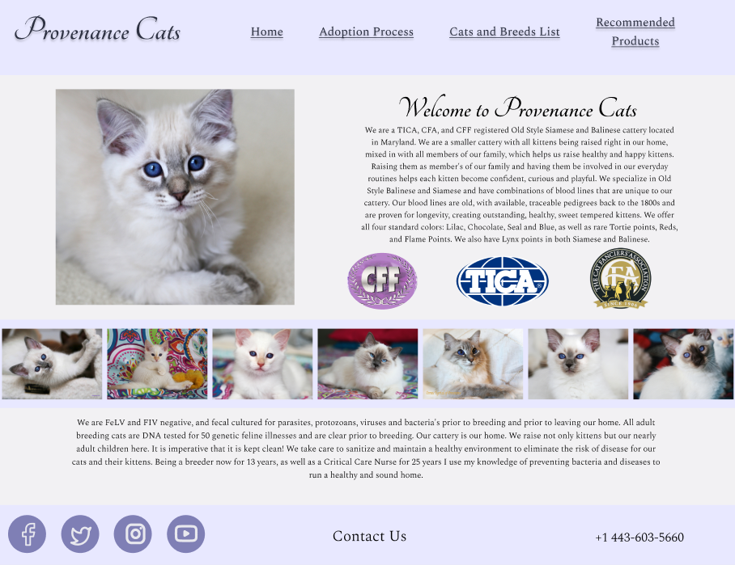
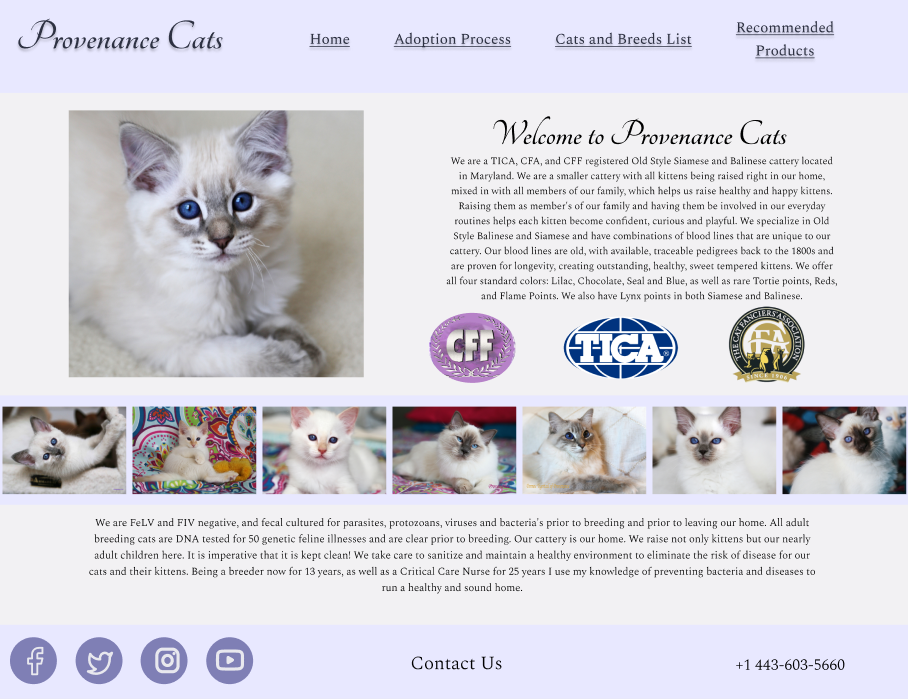

Project 2: Responsive Redesign
Part 1: Identifying Usability Problems

I chose the homepage for a private cat breeding business called Provenance Cats, because I have an interest in cats and felt the website left a lot to be desired, including the color palette I found hard on the eyes.
Usability concerns
- The website homepage doesn’t utilize space in the most efficient way, with a wide gap between the top of the page and the navigation bar itself. This is wasteful of the entire screen’s space and looks somewhat disorganized.
- The color scheme of the website is difficult to read: the saturated dark teal background makes the black text blend in.
- Another
Accessibility
WebAIM WAVE identified numerous accessibility issues with the website, including missing alternative text for images, contrast errors for text, and a lack of HTML structures including headers. I agree with WAVE’s findings BJKFDKFK
Part 2: Visual Redesign

I chose the homepage for a private cat breeding business called Provenance Cats, because I have an interest in cats and felt the website left a lot to be desired, including the color palette I found hard on the eyes.
ANNOTATE WIREFRAMES AND ADD HERE
 
